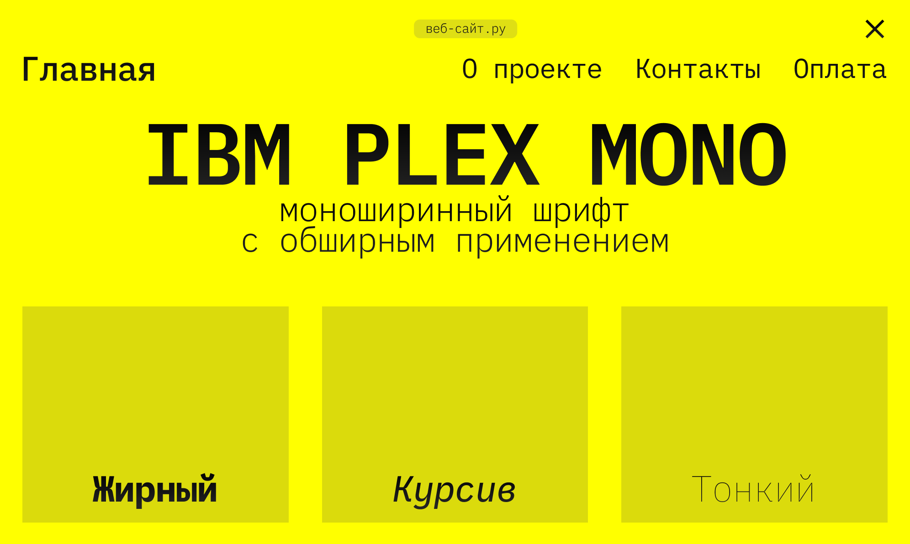
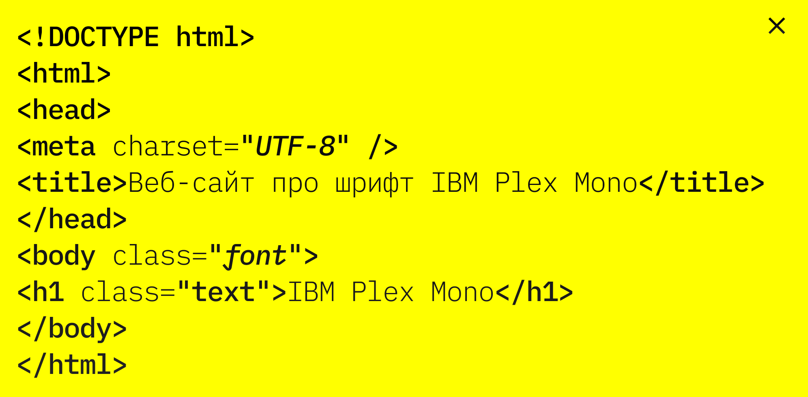
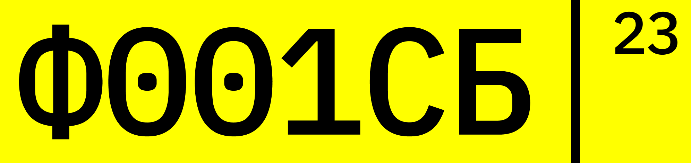

IBM
PLEX
MONO
2017 Mike Abbink
IBM Plex Mono — моноширинная гарнитура, созданная на основе IBM Plex Sans.
Семейство шрифтов Plex позиционируется как шрифты широкого назначения, которые могут применяться в различных областях, от Web и подготовки документов до редакторов кода.

Рассматриваемая гарнитура IBM Plex Mono используется, в основном, в официальных бумагах, а также программистами, веб-мастерами.

Также может применяться в автомобильных номерах, в паспортах и водительских правах.

В шрифте хоршо проработаны глифы, что делает возможным широкое использование шрифта в различных целях
1
&
0
%
F
Шрифт был разработан, чтобы передать дух и историю IBM, а также проиллюстрировать уникальные отношения между человечеством и машиной — главную тему для IBM с начала века.
Скачать шрифт